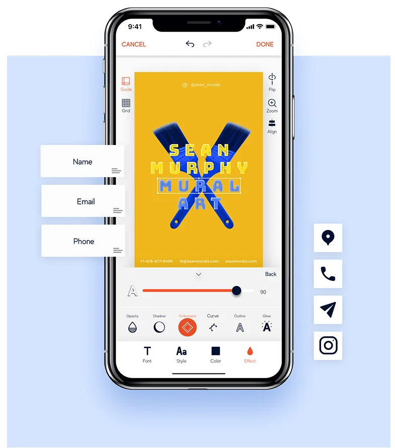

Betacard is a mobile app for creating, sharing and managing digital business cards. You can share by QR, link or nearby, and scan paper cards to keep everything in one place. I worked on the mobile UX, aiming to make swapping contacts feel quick and natural, even mid-conversation.
role
UI/UX Designer
I designed the end-to-end flows and the reusable components that keep the app simple and consistent.
problem
Traditional business cards are
Static and hard to update
Not flexible for personalization
Limited in how they represent personal or brand identity
Designed the customization experience
Personalising a card is the heart of the app, so most of my time went here:
Layout structure of customization tools
Selection of effects and styles
How users preview changes in real time
The goal: plenty of freedom, without a wall of options.

Designed card templates
A set of ready-made templates gives people a good-looking starting point, so a professional card takes minutes, not an afternoon.
outcome
Templates get people started fast, and the editor lets them make the card their own, all inside one simple flow.